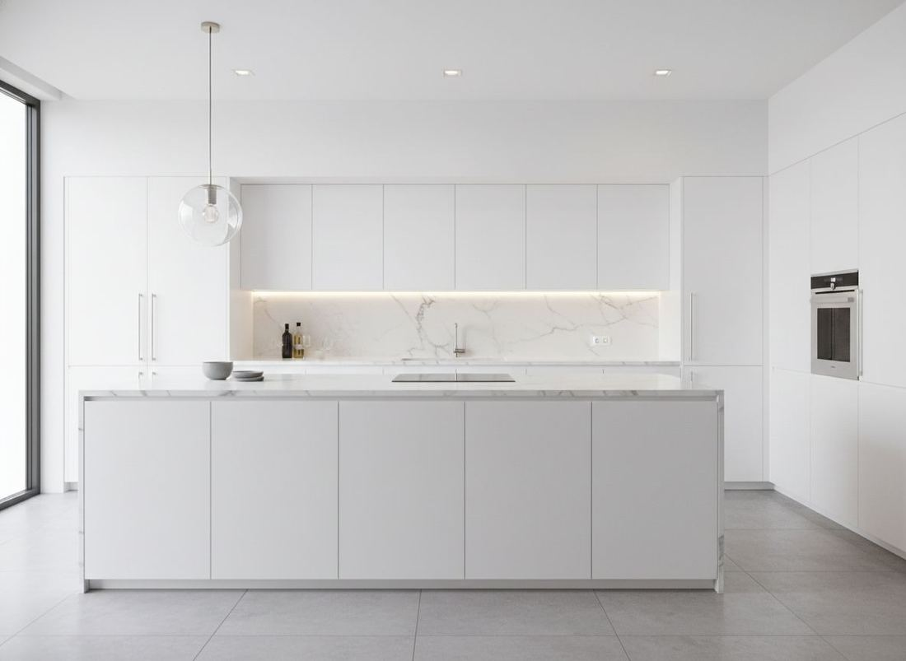
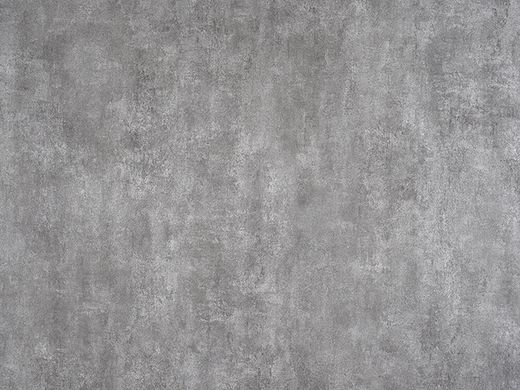
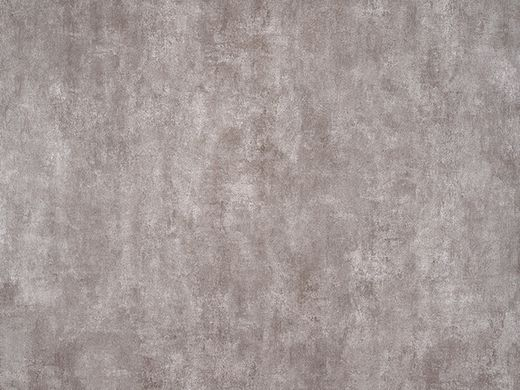

SM01
Pure White Soft Matt Interior Film
Pure white soft matt interior film with a smooth non-reflective finish, ideal for minimalist walls and modern interiors.
Roll size 1.23m x 50 m
KOINTEC 27/28 · 7 finishes
KOINTEC soft matt interior film has a velvety, low-sheen surface that suits kitchen fronts, bedroom furniture and wardrobes. This page lists every Soft Matt and Texture Soft Matt finish in the KOINTEC 27/28 catalogue with its code, from pearl grey and warm neutrals to textured wood looks. Open a finish to see it in an interior, or go to interiorfilm.com for the full product details.





It is a self-adhesive architectural film, made in Korea, that gives existing surfaces such as cabinets, doors, walls and furniture a soft finish without replacing them.
7 finishes across Soft Matt, Texture Soft Matt. Each one is listed on this page with its product code.
From XESS Trading LLC in Al Quoz, Dubai, the authorized KOINTEC distributor in the UAE since 2016, through interiorfilm.com. We also supply Saudi Arabia and Qatar.
Send the product codes you like to our team through the contact page on interiorfilm.com, by WhatsApp on +971 55 217 8882 or by email to info@xesstrading.com.